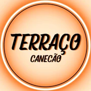
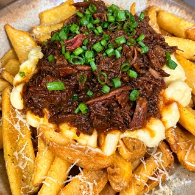

Batata com Costela é o carro-chefe.
O Ancho Angus, queridinho da casa.
● DELIVERY ABERTO · ATÉ 22H45
Clica aqui e faz teu pedido
Cardápio
digital → ● FECHADO · ABRE HOJE ÀS 18H Já escolhe o teu pra mais tarde Ver
cardápio →
digital → ● FECHADO · ABRE HOJE ÀS 18H Já escolhe o teu pra mais tarde Ver
cardápio →

quantos vão comer hoje?
COMBO
R$ 0
Preços do cardápio digital. Combos disponíveis no Flyfoods.
nossos espaços
Terraço Canecão
Reservar mesa→
Avaliar no Google→
Terraço Clube
Eventos e aluguel do espaço→
bateu a fome?
Terraço
resolve.
resolve.
4,8
★★★★★
254 avaliações no Google
Rua Siqueira Campos, 825
São José do Rio Pardo · SP
Como chegar→
São José do Rio Pardo · SP
Desenvolvido por FlyFoods